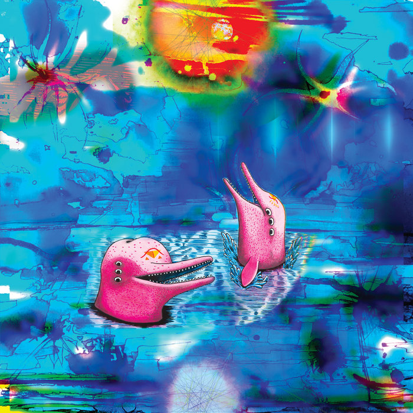
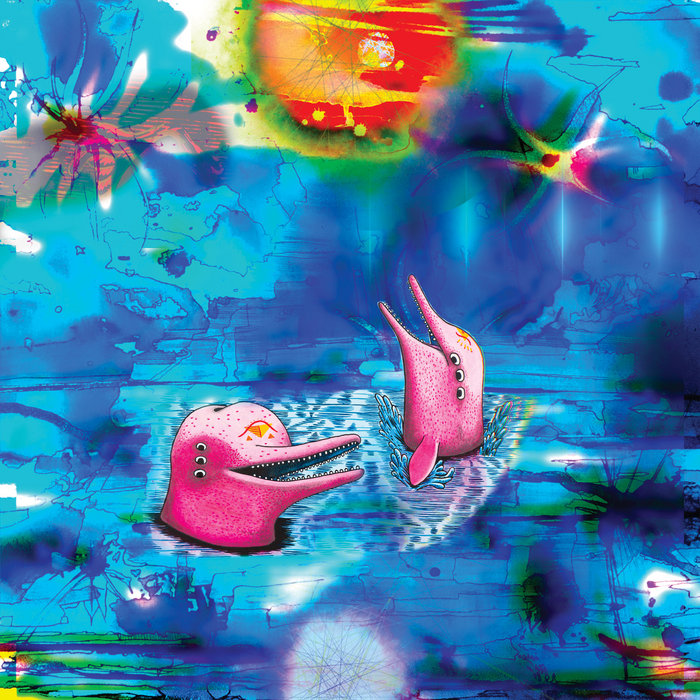

Day 98

Anteloper ◆ Earthlings ◆ Pink Dolphins ◆ 2022
看了 Bandamp 的年终总结，给我留下深刻印象的是这首。很迷幻，很不一样，越听越喜欢。封面也不错。专辑里的其他几首就比较难以被凡人欣赏。
歌词很简单，我就不放了www

Anteloper ◆ Earthlings ◆ Pink Dolphins ◆ 2022
看了 Bandamp 的年终总结，给我留下深刻印象的是这首。很迷幻，很不一样，越听越喜欢。封面也不错。专辑里的其他几首就比较难以被凡人欣赏。
歌词很简单，我就不放了www